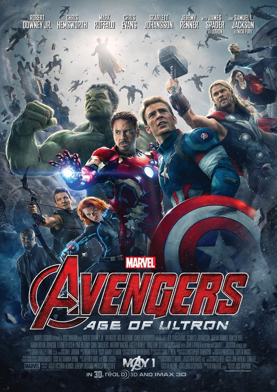

von Hestia van Roest

Marvel's The Avengers 2: Age of Ultron (© Marvel)
(hr) Manche haben ihn mit zittriger Spannung erwartet, andere sind all der Superhelderei langsam aber sicher überdrüssig. Wie auch immer die Einstellung, an wohl kaum jemandem, der in der Welt der Phantastik wandelt, ist die bevorstehende Wiederkehr der erfolgreichsten Helden in Strumpfhosen unbemerkt vorüber gezogen.
Mit einer Schauspielerriege, die es in sich hat, und einem Budget, welches den Film an die dritte Stelle der teuersten Filme der Geschichte setzt, ist die extrem hohe Erwartung an den zweiten Teil von Marvel’s The Avengers auch mehr als gerechtfertigt – egal ob dies optimistische Verklärung oder die Hoffnung auf den Fall des Film-Titanen ist. Es ist nicht neu, dass in vielen Fällen die Nachfolger nie die Höhen des Originals erreichen können, jedoch ist das Vertrauen in diesem Fall wohl doch auf der Seite von Marvel – jedenfalls wenn man sich die ersten Besucherzahlen ansieht. Obwohl nur in 471 deutschen Kinos ins Rennen geschickt, dank des Boykott-Eklats rund um Mutter-Konzern Disney, so brachte der Film doch am ersten Wochenende bereits stolze 710.000 Menschen in die Plüschsessel. Nicht so viel wie zwei Wochen vorher Fast & Furious 7, aber trotzdem hat bisher kein anderer Marvel-Schinken so viele Besucher angelockt.
Erste Analysen aus Amerika, wo der Film erst am ersten Mai anlief (zum Vergleich: hier in 4,247 Kinos) lassen auf weitaus größere Zahlen hoffen. Manch ein selbsternannter Experte prophezeit sogar, dass Marvel's The Avengers 2: Age of Ultron die Zahlen des Vorgängers, welcher bis heute den Rekord des erfolgreichsten Kinostarts in den USA hält, weltweit jedoch auf Platz 3 rangiert, brechen wird.
Rekord-Verdacht oder resigniertes Finale
Ist dies gerechtfertigt? Joss Whedon, ein bunter Hund in der Landschaft des Sci-Fi und spätestens seit seinem Erfolg mit dem ersten Avengers-Film auch außerhalb von Brown-Coat-Zirkeln bekannt, hat auch bei diesem Film die Zügel in der Hand, und für viele war bereits dies Beweis genug – der Film kann nur gut werden. Die Realität sollte vielleicht ein wenig nüchterner gehandhabt werden.
Der Film erscheint insgesamt ein wenig zersplittert, mit Momenten, die weitaus großartiger sind als die des Vorgängers, aber ebenso Entwicklungen, die der Freude einen Dämpfer versetzen oder Fragen aufwerfen. Bereits die Eröffnungsszene – welche nicht nur visuell ein Traum ist, sondern den Zuschauer ohne Pause in den Rhythmus und den Witz des Films einführt – hinterlässt die Frage: »Wie sind wir zu diesem Punkt gekommen?« Zwischen dem Ende von Avengers 1 und heute liegen drei Solo-Auftritt von Team-Mitgliedern, welche nicht von einer besonders eng verbundenen Team-Gemeinschaft sprechen, da Tony Stark, Thor und Captain America alleine auf breiter Flur standen, als ihre Leben – oftmals wortwörtlich – zerbrachen. Leider wird diese Frage auch den Film über nicht beantwortet. Ebenso wenig gab es die versprochene Erklärung für die Abwesenheit von Clint Barton a.k.a. Hawkeye, von dem seit dem Chitauri-Angriff nichts zu sehen war. Man mag es Kleinkrämerei nennen, aber nach so vielen Filmen ohne den Ansatz einer Antwort bleibt die Frage hängen, ein schaler Nachgeschmack in der sonst sehr geschlossen aufgebauten Welt des Marvel Cinematic Universe.
Im Gegenzug sollte aber unterstrichen werden, dass Age Of Ultron eine Sache wirklich gut macht – den momentanen Stand der Dinge auf epische Weise und mit Blick nach vorne darzustellen. Das Team ist ein Team, sei es in der Art, wie auf dem Kampffeld zusammen gearbeitet und sich unterstützt wird, oder das gemeinsame Feiern auf der After Party. Wenn Iron Man kurzerhand für einen im Kampf verletzten Clint Barton eine Spezialistin per Privatjet einfliegen lässt, das Ganze aber mit flapsigen Witzen abtut – denn wer will Tony Stark schon nachsagen, ein Herz zu haben? – wird schnell bewusst, wie nah sich die Helden inzwischen stehen.
Avengers: Zukunft ist Vergangenheit?
Als Gegenpol und mit Blick auf das, was kommt, sehen wir vor allem die Entwicklung zwischen Robert Downey Jr‘s Iron Man und Chris Evans‘ Captain America. Auch wenn beide im Fall der Fälle nahtlos zusammenarbeiten, den anderen sicherlich auch schätzen, macht Age of Ultron dennoch deutlich – die Auseinandersetzung der zwei Alphamännchen hat gerade erst begonnen. Besonders Steve Rogers, nun offiziell Anführer der Rächer, scheint teilweise so abgelenkt durch seine Reibungen mit Stark, dass er fast zum Nebencharakter wird. Er ist anwesend, er hat tolle Kampfszenen, er macht seinen Job. Trotzdem bleibt der gute Captain bis auf wenige Momente eher zweidimensional.
Ähnliches ist über Thor zu sagen. Zurück auf der Erde scheint er sich einfach nur zu freuen, mit seinen semi-menschlichen Kampfgenossen Zeit verbringen zu dürfen, und um hie und da seiner inzwischen langjährigen Freundin Jane Foster einen Besuch abzustatten. Seine Handlungen im Film scheinen mehr Aufbau für die weitere Entwicklung des Film-Universums, als dass er eine Schlüsselfigur abgibt. Für Fans der Charaktere sicherlich schade, trotzdem ist es vielleicht so gar nicht schlecht. Schließlich haben diese Figuren neben den Team-Filmen auch ihre eigenen Momente im Spotlight. Außerdem gibt es so mehr Raum für die Entwicklung der bisher eher kleineren Charaktere.
Ganz vorne weg in diesem Fall Hawkeye, der nicht nur mit den besten Sprüchen die Show stiehlt, sondern vollkommen überraschend zum moralischen Zentrum des Films wird, teilweise fast schon die Rolle der Hauptfigur einnimmt und vor allen Dingen niemanden mehr daran zweifeln lassen dürfte, dass sein Platz bei den Avengers mehr als verdient ist. Jeremy Renner, der sich nach dem ersten Mal mit Pfeil und Bogen sichtlich unwohl fühlte mit Clint Bartons Rolle, ist hier viel mehr in seiner Haut und hat so viel Spaß an dem, was er tut, dass die Zuschauer nicht anders können als mitzugehen.
Hallmark-Hulk vs. Armors Pfeil
Auch Bruce Banner (Mark Ruffalo), besser bekannt als wütender Koloss Hulk, bekommt die Zeit, einen tieferen Einblick in seinen Charakter zu geben, auch wenn nicht alles was er im Film tut, passend erscheint. Im Vordergrund steht für ihn weiterhin die Angst des Kontrollverlustes, welche sich in diesem Film definitiv zuspitzt und die Entscheidung des Hulk, am Ende des Films das Team zu verlassen (jedenfalls macht es den Eindruck), verständlich macht.
An letzter Stelle soll auch noch Natasha Romanoff (Scarlett Johansson) erwähnt werden. Dass dies zuletzt geschieht, ist kein Zufall, sondern weist viel mehr auf, mit wie wenig Liebe das einzige weibliche Teammitglied in diesen Auftritt geschrieben wurde. Noch immer eine formidable Kämpferin, deren dunkle Historie im Film mit einem sehr feinen Licht beschienen wird, so bleibt der Charakter letztlich in Erinnerung als romantische Partnerin des Hulk. Auch wenn das offensichtliche Die Schöne und das Biest-Thema, welches von Whedon hier aufgegriffen wird, interessant sein kann, scheint es in diesem Zusammenhang unpassend. Sowohl Johansson als auch Ruffalo scheinen sich unwohl zu fühlen in den Rollen der Verliebten, was der bereits wenig vorhandenen Chemie der beiden nicht gerade zuträglich ist. Auch scheint dieser Handlungsstrang eine überraschend große Rolle einzunehmen. Herr Whedon, das hat auch schon mal besser funktioniert.
Die positiven Überraschungen des Films, neben Clint Barton, sind jedoch Elizabeth Olson als Scarlett Witch und Paul Bettany als Vision. Auch Aaron Taylor-Johnson als Quicksilver ist nicht zu missachten, jedoch kommt er nicht ganz auf das Level seiner Mitspieler. Wanda Maximoff jedoch ist die Frau, die in Erinnerung bleibt. Manch einer hatte vor, den Charakter mit Vorsicht zu genießen – schien es doch, als wolle Whedon versuchen, die Charakter-Idee der River Tam erneut aufleben lassen. Diese Angst ist jedoch unbegründet. Olson spielt den Charakter mit viel Intelligenz und innerer Stärke, was letztlich in einer Szene resultiert, die wirklich Angst davor macht, diesen Charakter nicht auf der eigenen Seite zu haben. Paul Bettanys Vision ist ebenfalls vom ersten Moment an entzückend. Mit einer feinfühligen Mischung aus Naivität und Weisheit formt Bettany einen interessanten, sympathischen Charakter der bereits jetzt aus den zukünftigen Filmen kaum noch weg zu denken ist.
Letztlich darf eine Sache nicht vergessen werden – Ultron. Die Geschichte der »Bösen« in den Marvel-Filmen ist so durchwachsen wie das englische Wetter. Von einem Red Skull, der einen eigentlich soliden ersten Captain America-Film beinahe ruinierte, bis zu einem Alexander Pierce, welcher trotz seiner Unfähigkeit, Milch einzuschenken wirklich beängstigen konnte, gab es schon viele bekannte Comic-Gesichter zu sehen, und viele blieben hinter den Erwartungen zurück. Das kann von Ultron nicht behauptet werden. Es mag vielleicht nie wirklich in Frage stehen, ob es den Rächern gelingen wird, ihren Widersacher zu schlagen, trotzdem ist Ultron die Art von Bösewicht, die man es liebt zu hassen. Oder vielleicht sogar hasst zu lieben. Er ist witzig, intelligent, charmant und kratzt immer wieder seicht an der Kante des Wahnsinns, was ihm überraschende Charaktertiefe bringt. Ähnlich wie Alexander Pierce ist Ultron die Manifestation des modernen Supergegners, spielt mit eben den Dingen, die wir als unsicher ansehen. Er ist ein Schurke für die heutige Zeit und passt wunderbar als weiterer Katalysator für den bevorstehenden Civil War der Helden.
Und wenn sie nicht gestorben sind …
Alles in allem ist Age Of Ultron Popcorn-Kino. Er rührt nicht zu Tränen oder wirft die Welt in ein anderes Licht, aber er macht verdammt viel Spaß. Die Witze mögen manchmal nicht gerade tiefsinnig sein, aber sie passen genau dort, wo sie erscheinen, und sie klingen nach, bringen den Zuschauer auch auf der Rückfahrt noch zum Lachen. Ob die Abstriche des Films sich mit den positiven Eigenschaften aufwiegen lassen, sollte am besten jeder selbst entscheiden. Letztlich ist es einfach schön, einen weiteren Schritt mit diesen Charakteren gegangen zu sein. Selbst wenn die Handlung sich mehr wie ein Vorläufer des bevorstehenden Captain America 3-Films (und sogar des später folgenden Avengers-Doppelpacks Infinity Wars) anfühlt, ist es ein Film, den zu gucken es sich lohnt, so denkt jedenfalls die Autorin dieses Artikels.
Weiterführende Informationen zum Thema:
http://marvel.com/movies/movie/193/avengers_age_of_ultron - Offizielle Homepage
https://www.youtube.com/watch?v=yghMrgcgdmo – Trailer 3 (deutsch)